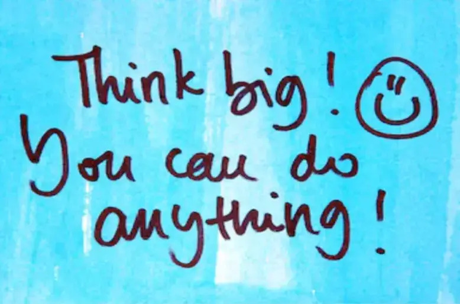

Hello World
My name is Dorinda Bassey, from Uyo, Nigeria. You can call me Dorinda. “I am an Outreachy Intern”.(this sentence alone gives me that surreal feeling). I am working with the Yocto project Community on the project: Add support for elfutils debuginfod.
Although i have completed my undergraduate studies in Electrical Electronics Engineering still waiting on the pandemic for my degree, I am a self-taught software developer. Initially starting out my self learning journey, i was moving around from language to language and frameworks trying to find a niche, which i later found “Embedded systems development”. Overtime as i learn and develop, i have worked with the following languages C/C++, C#, Python, PHP, SQL, PDO, HTML, CSS; frameworks like bootstrap, mySQL, Bunifu; other tools i’ve worked with are Git, NuGet, GDB, AWS, Docker.
In my free time, i enjoy writing, reading, listening to music, games i play Scrabble and Chess. Well i think the order of my hobby list should have started with “listening to music” because i love music especially cinematic songs. However ever since the pandemic a lot of things changed and now my additional hobby is Baking and cooking, i love trying out new stuffs with food and recreating food recipes, but now that i’ll be fully engaged with the yocto project community, i think i’ll try out their software recipes and write one lol. Finding this Outreachy internship was actually an eye opener to open source contribution for me and it kind of made contributing to open source my latest hobby. Okay before i end the introduction, i reserved the most important point about me for the last; I am one of Christ lovers.
My Core Values
I have quite a number of values, but i’ll discuss just 3 core values:
Determination: I am someone who is goal driven and persistent, especially when it comes to fixing bugs in my code. I am always determined to achieve whatever goal i set. Hence when i set goals, my principle of focus is not exactly on the goal but on my system of development, when i focus on the process and methodology of my goals, achieving it becomes inevitable.
Honesty: I strive to be honest with myself, and in my dealings with people. Like the saying goes
“Honesty is telling the truth to ourselves and others” - Kenneth H. Blanchard.
Learning: I am passionate and eager to learn new methodologies and techniques related to software engineering, i tell myself passion is not enough and this has been my morale booster for self development.
What motivated me to apply to Outreachy
First let me start with a proper introduction to Outreachy.
Outreachy is a program that provide interns opportunities to work in Free and Open Source Software (FOSS). Outreachy internships are open to applicants around the world. Internships can focus on programming, design, documentation, marketing, or other kinds of contributions. Interns work remotely and are not required to relocate. Interns are paid a stipend of $5,500 USD for the three-month internship. Interns have a $500 USD travel stipend to attend conferences or events. Outreachy is open to women (both cis and trans), people of other gender identities that are minorities in open source (trans men, and gender-queer people) . This internship is offered twice a year and you do not have to be a student to apply for it. However, you must be available for a full-time, 40 hours a week during the internship period.
Now about what motivated me to apply to Outreachy
In the month of august on my birthday, i had started a 100 days of code challenge. Then a good friend of mine on twitter saw the challenge i started, and who was more of a morale booster, mentioned this Outreachy internship opportunity to me. I checked out the Outreachy internship webpage, read a couple of past interns posts, and i said to myself this is it. I told myself i was definitely going to apply, so i put up a sticker about applying to Outreachy on my todo list board.
Before i even started my application, i already made some research about the project i would likely work on if i were to be selected as one of the interns, i was optimistic about becoming an intern with Outreachy. So after i made my first application, i started anticipating to get into the next stage which was the contribution stage. When i passed the initial application i felt so excited, that i immediately continued making my research on the project i wanted to work on, and made some contributions alongside other open source projects. I kept myself busy with open source contribution till the day the final applicants were to be called out. All day i had this tingly feeling, i didn't know if i was going to be selected as one of the interns, but deep down i had a conviction. Then Outreachy organizers moved the selection day to the next day, that was two days of torture about the unknown. Finally the list was out, and i got a congratulatory email from Outreachy organizers, now the rest is history.